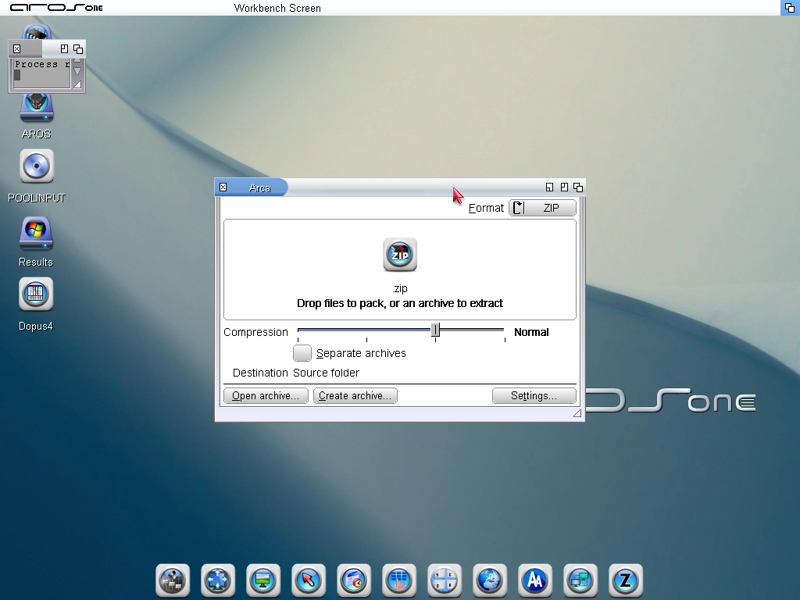
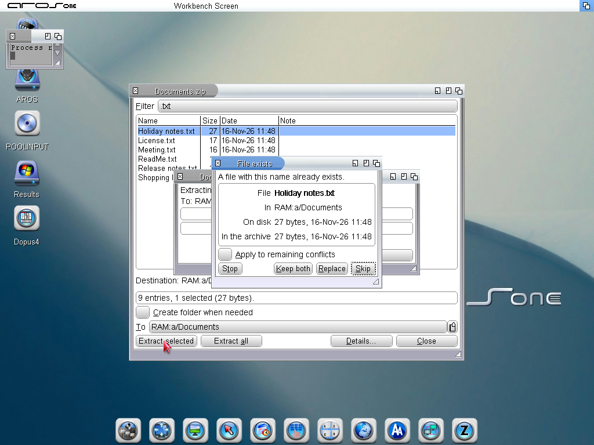
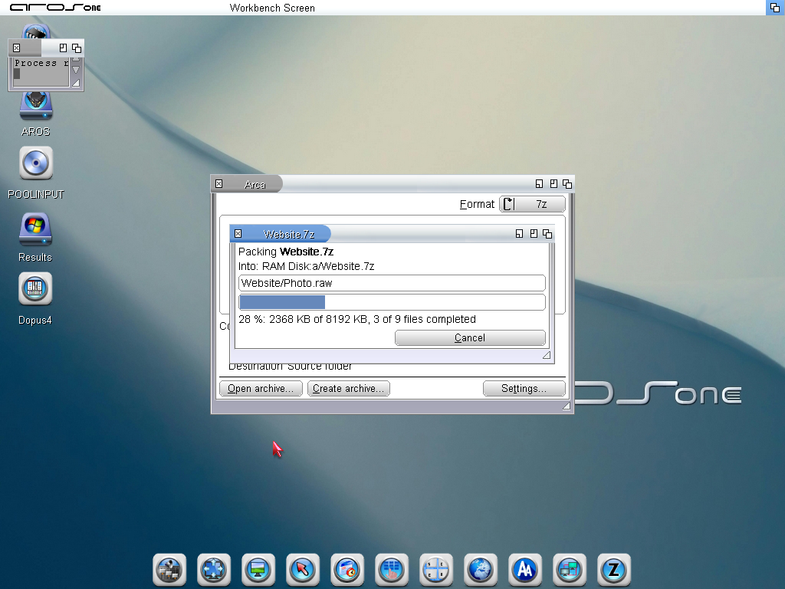

Native Zune interface · Open source · Version 0.1.1
LhA / ZIP / 7z / tar.gz

Arca on AROS One
Creating archives
Pack files and drawers.
Choose LhA, ZIP, 7z or tar.gz, set the compression level and drop your files or drawers onto Arca.
Arca saves the archive beside the original files. You can choose a different destination in Settings, or use the file requester to select what to pack.
Pack the selection into one archive, or create a separate archive for each dropped item.
The archive browser lists its contents and lets you choose which files to extract and where to save them.
You can also drag selected entries onto an open Wanderer drawer. Amiga+A selects the whole list.
Drop several archives to extract them in a queue. A summary lists the results when the queue finishes.
Browsing a ZIP archive on AROS One
Passwords and split archives
Read encrypted archives and split volumes.
Open encrypted ZIP, 7z and RAR archives, including ZIP files protected with ZipCrypto or AES.
Passwords
Enter the archive password
Arca asks for a password before extracting encrypted files. For archives with encrypted filenames, it asks before showing the contents. The password is not saved.
The Shell command can prompt without showing what you type, or accept PASSWORD in a script.
Split archives
Keep all the parts together
Put all volumes in one drawer, then open any part. Supported names include name.7z.001, name.part1.rar and name.rar with name.r00.
If a volume is missing, Arca names it and stops before extracting.
Creating encrypted archives or splitting new archives into volumes is not supported.
Existing files and Amiga attributes
Handle duplicates. Keep Amiga attributes.
If a file already exists at the destination, compare its size and date with the archived copy before deciding what to do.
Existing files
Skip, replace or keep both
Skip the file, replace it or keep both copies. Return chooses Skip. Settings can skip existing files or keep both copies automatically.
Cancelling
Cancel packing or extraction
Cancelling extraction keeps completed files and removes the file in progress. Cancelling packing removes the unfinished archive. An existing archive stays in place until its replacement is complete.
Amiga attributes
Preserve comments and protection bits
LhA creation stores Amiga comments, protection bits, dates to the second and empty drawers. Extraction preserves the Amiga comments and protection bits held in LhA and LZX archives.

Choosing what to do with an existing file

Packing a 7z archive on AROS One
Settings
Choose where to save and how to open.
Set the packing and extraction destinations, and choose whether double-clicking an archive extracts it or opens the browser.
To open archives with Arca from Wanderer, set it as the default tool for those archive types.
The user guide explains archive icons and the MODE=BROWSE tool type.
Choose the startup window and double-click action. Open the destination drawer after a job or close a successful result automatically.
Packing
Save beside the source files, choose a destination each time or use a fixed drawer. Choose the name for an archive containing several items.
Extracting
Choose the destination, when to create a new drawer and whether to ask about existing files, skip them or keep both copies.
Warnings and errors stay open until you dismiss them. Details shows the full paths and messages.
Archive formats
Supported formats
The application and Shell command support the same formats. Required archive helpers are included in the package.
Reading and writing support
Format
Browse & extract
Create
Details
LhA / LZH
Yes
Yes
Amiga comments, protection bits, dates and empty drawers
ZIP / ZIP64
Yes
ZIP
Read ZipCrypto and AES encrypted archives
7z
Yes
Yes
Read encrypted archives and split volumes
tar.gz / TGZ
Yes
Yes
Compressed tar archives
RAR 1.5 to 5
Yes
No
Read encrypted archives and multipart sets
LZX
Yes
No
Amiga comments and protection bits
tar / tar.bz2 / tar.xz
Yes
No
Uncompressed and compressed tar archives
gzip / bzip2 / xz
Yes
No
Individual compressed files
ISO 9660
Yes
No
Browse and extract files from an image
DMS
List only
No
Disk images are listed, not written to a disk
Run arca-cli FORMATS to list the installed build’s format support.
Shell commands
List, extract and pack from the Shell.
Use arca-cli in the Shell or in AmigaDOS scripts. Specify the archive, operation and destination on the command line.
arca-cli HELP lists all options with examples. Ctrl-C stops the command and keeps files already extracted. Scripts can check the return code for warnings or errors.
AROS Shell / arca-cli
# Inspect an archive
arca-cli archive.zip LIST
# Extract to a drawer
arca-cli archive.zip TO Work:Extracted
# Pack a backup
arca-cli Work:backup.zip PACK FILES Work:Documents FORMAT ZIP
# Show available operations
arca-cli FORMATS
Arca 0.1.1
Download Arca
Choose the package matching your AROS architecture and ABI.
Unpack the ZIP, keep the complete Arca drawer together and start Arca from its icon. It needs the system NList, NListview and NFloattext classes.
Mainline ABIv1 builds for x86_64 PC and Raspberry Pi need an AROS nightly from 6 November 2026 or later, with stdc.library 0.53 or later. This requirement does not apply to the ABIv11 build.
Older SFS versions cannot seek inside archive files larger than 2 GB. Keep archives below that size on those volumes, or use an existing split set. AROS filenames use ISO-8859-1; Arca maps names outside that character set and reports the changes. Stored links are not created. Large RAR jobs can be slower on ABIv11.